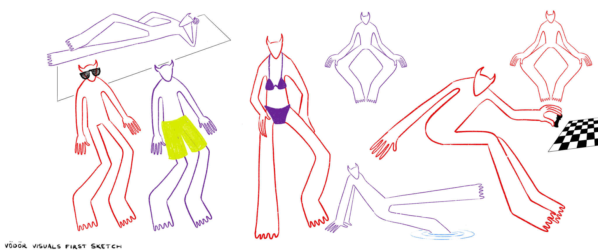
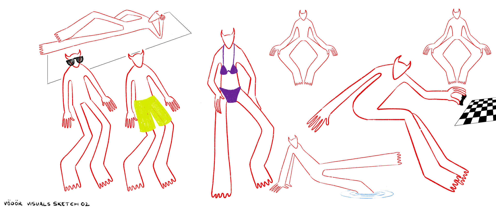
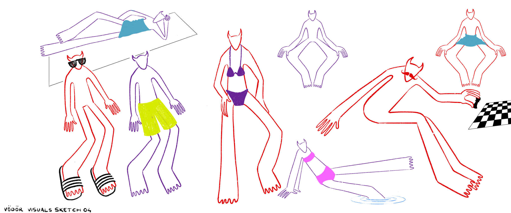
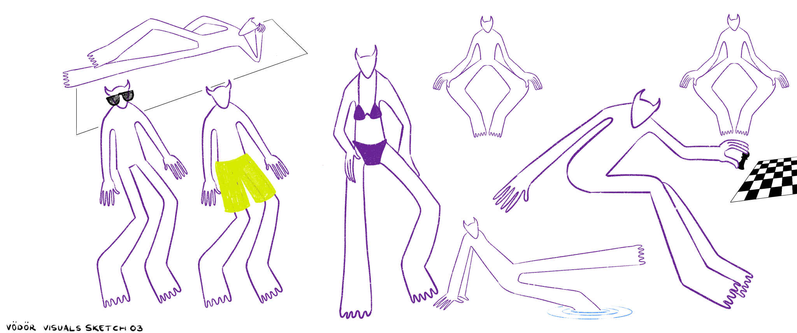

BUDAPEST · DUNAPART
VÖDÖR.
Közösségi konténerszauna és fürdőház a Dunaparton. @bazelcsonakhaz // Community container-sauna and bathhouse on the riverside. [BUDAPEST]
NYITÁS: 2026. DECEMBERÉBEN / OPENING IN DECEMBER 2026.
TALÁLKOZUNK A DUNAPARTON
Helyszín



